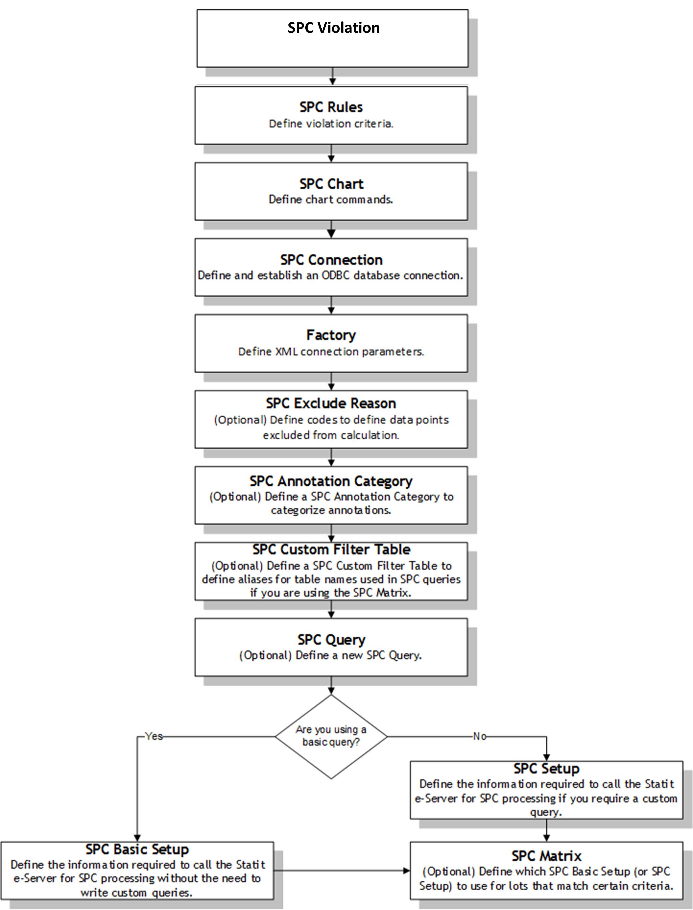

SPC-Modellierungsreihenfolge – Übersicht
Diese Abbildung veranschaulicht die Modellierungsreihenfolge für SPC. Weitere Informationen zu erforderlichen Inline SPC-Modellierungsobjekten finden Sie im nächsten Thema.
| Hinweis: | SPC-Makro ist nicht anwendbar, wenn Sie Inline SPC konfigurieren. |
